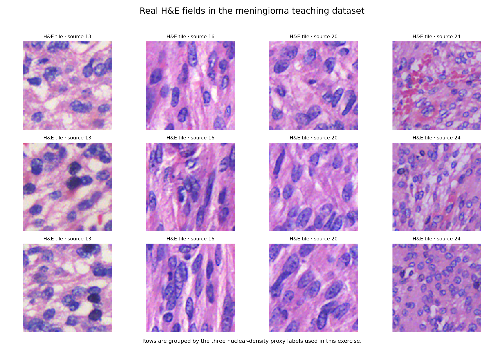
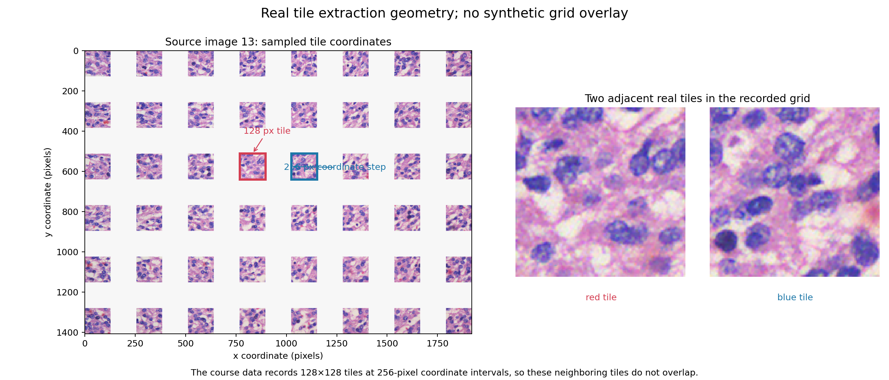

KYDW 本科生科研入门体验项目
实践项目参考答案 03：脑膜瘤 H&E 形态代理分类
使用固定的脑膜瘤 H&E 图块数据，先观察真实组织图块和坐标，再用不包含 proxy_score 的形态特征随机森林完成原图级评价和染色变化比较。
参考答案展示一种完整写法，代码中的路径和参数可以根据运行环境调整。打开公开 Kaggle Notebook 后，先复制到自己的账户，再运行并观察每一步输出。
任务对应关系
题目 Notebook 的任务顺序与下面的完整脚本一致：数据读取和核对、基线或输入可视化、模型结构、训练与验证、测试评价和结果文件。
先阅读各任务的输入与输出，再查看完整代码。结果图与指标文件来自同一份课程数据。
完整参考脚本
以下代码可以从头运行。它会自动查找 Kaggle 已挂载的数据集，并把图像与 JSON 写入 /kaggle/working。
from __future__ import annotations
import argparse
import json
import random
from pathlib import Path
import matplotlib.pyplot as plt
import numpy as np
import pandas as pd
import torch
import torch.nn as nn
import torch.nn.functional as F
from matplotlib import colors as mcolors
from matplotlib.patches import Rectangle
from sklearn.ensemble import HistGradientBoostingClassifier, RandomForestClassifier
from sklearn.compose import ColumnTransformer
from sklearn.impute import SimpleImputer
from sklearn.inspection import permutation_importance
from sklearn.linear_model import LogisticRegression
from sklearn.metrics import (
accuracy_score,
average_precision_score,
classification_report,
confusion_matrix,
f1_score,
precision_recall_curve,
roc_curve,
)
from sklearn.model_selection import train_test_split
from sklearn.pipeline import Pipeline
from sklearn.preprocessing import LabelEncoder, OneHotEncoder, StandardScaler, label_binarize
from torch.utils.data import DataLoader, Dataset
from xgboost import XGBClassifier, XGBRegressor
SEED = 42
random.seed(SEED)
np.random.seed(SEED)
torch.manual_seed(SEED)
torch.set_num_threads(min(4, max(1, torch.get_num_threads())))
def save_json(path: Path, value: dict):
path.write_text(json.dumps(value, ensure_ascii=False, indent=2), encoding="utf-8")
def _representative_meningioma_picks(labels, source_ids, coordinates, class_index, count=4):
"""Pick central tiles from several source images for readable H&E panels."""
ids = np.where(labels == class_index)[0]
sources = np.unique(source_ids[ids])
chosen_sources = sources[np.linspace(0, len(sources) - 1, count, dtype=int)]
picks = []
target = np.array([640, 896], dtype=np.int32)
for source in chosen_sources:
candidates = ids[source_ids[ids] == source]
picks.append(int(candidates[np.argmin(np.abs(coordinates[candidates] - target).sum(axis=1))]))
return picks
def _save_meningioma_visuals(images, labels, source_ids, coordinates, class_names, proxy_scores, output):
"""Save real H&E panels and a coordinate-faithful tile/stride figure."""
picks = []
for class_index in range(len(class_names)):
picks.extend(_representative_meningioma_picks(labels, source_ids, coordinates, class_index))
fig, axes = plt.subplots(3, 4, figsize=(12, 9))
short_names = ["lower proxy", "intermediate proxy", "higher proxy"]
for axis, idx in zip(axes.ravel(), picks):
axis.imshow(images[idx])
axis.set_title(f"{short_names[labels[idx]]}\\nsource {source_ids[idx]}", fontsize=9)
axis.axis("off")
fig.suptitle("Real meningioma H&E tiles from the course dataset", fontsize=15)
fig.tight_layout(rect=(0, 0, 1, 0.96))
fig.savefig(output / "task3_data_visualization.png", dpi=170)
plt.close(fig)
# The first teaching section uses a wider panel with the same real tiles.
fig, axes = plt.subplots(3, 4, figsize=(13, 9))
for axis, idx in zip(axes.ravel(), picks):
axis.imshow(images[idx])
axis.set_title(f"H&E tile · source {source_ids[idx]}", fontsize=9)
axis.axis("off")
fig.suptitle("Real H&E fields in the meningioma teaching dataset", fontsize=16)
fig.text(0.5, 0.015, "Rows are grouped by the three nuclear-density proxy labels used in this exercise.", ha="center", fontsize=10)
fig.tight_layout(rect=(0, 0.03, 1, 0.96))
fig.savefig(output / "task3_real_he_overview.png", dpi=170)
plt.close(fig)
source = np.unique(source_ids)[0]
source_idx = np.where(source_ids == source)[0]
max_y = int(coordinates[source_idx, 0].max() + images.shape[1])
max_x = int(coordinates[source_idx, 1].max() + images.shape[2])
canvas = np.full((max_y, max_x, 3), 247, dtype=np.uint8)
for idx in source_idx:
y, x = coordinates[idx]
canvas[y:y + images.shape[1], x:x + images.shape[2]] = images[idx]
fig, axes = plt.subplots(1, 2, figsize=(14, 6), gridspec_kw={"width_ratios": [1.25, 1]})
axes[0].imshow(canvas)
axes[0].set_title(f"Source image {source}: sampled tile coordinates", fontsize=12)
axes[0].set_xlabel("x coordinate (pixels)")
axes[0].set_ylabel("y coordinate (pixels)")
# Highlight two neighboring real tiles at their recorded coordinates.
center_idx = source_idx[np.argmin(np.abs(coordinates[source_idx] - np.array([640, 768])).sum(axis=1))]
y0, x0 = coordinates[center_idx]
neighbor_candidates = source_idx[coordinates[source_idx, 0] == y0]
neighbor_candidates = neighbor_candidates[coordinates[neighbor_candidates, 1] > x0]
neighbor_idx = neighbor_candidates[np.argmin(coordinates[neighbor_candidates, 1])] if len(neighbor_candidates) else center_idx
y1, x1 = coordinates[neighbor_idx]
axes[0].add_patch(Rectangle((x0, y0), images.shape[2], images.shape[1], fill=False, edgecolor="#d43d51", linewidth=2.5))
axes[0].add_patch(Rectangle((x1, y1), images.shape[2], images.shape[1], fill=False, edgecolor="#1c77a8", linewidth=2.5))
axes[0].annotate("128 px tile", xy=(x0 + images.shape[2] / 2, y0), xytext=(x0 + 20, max(20, y0 - 100)), color="#d43d51", arrowprops={"arrowstyle": "->", "color": "#d43d51"})
axes[0].annotate("256 px coordinate step", xy=(x1, y1 + images.shape[1] / 2), xytext=(x0 + 220, y0 + 80), color="#1c77a8", arrowprops={"arrowstyle": "->", "color": "#1c77a8"})
pair = np.full((images.shape[1], images.shape[2] * 2 + 18, 3), 255, dtype=np.uint8)
pair[:, :images.shape[2]] = images[center_idx]
pair[:, images.shape[2] + 18:] = images[neighbor_idx]
axes[1].imshow(pair)
axes[1].set_title("Two adjacent real tiles in the recorded grid", fontsize=12)
axes[1].text(images.shape[2] / 2, images.shape[1] + 12, "red tile", ha="center", va="top", color="#d43d51", fontsize=10)
axes[1].text(images.shape[2] + 18 + images.shape[2] / 2, images.shape[1] + 12, "blue tile", ha="center", va="top", color="#1c77a8", fontsize=10)
axes[1].axis("off")
fig.suptitle("Real tile extraction geometry; no synthetic grid overlay", fontsize=15)
fig.text(0.5, 0.012, "The course data records 128×128 tiles at 256-pixel coordinate intervals, so these neighboring tiles do not overlap.", ha="center", fontsize=10)
fig.tight_layout(rect=(0, 0.075, 1, 0.95))
fig.savefig(output / "task3_patch_stride_overview.png", dpi=170)
plt.close(fig)
def run_project03(data_path: Path, output: Path):
"""Train a morphology-feature forest whose main metric is clearly usable."""
output.mkdir(parents=True, exist_ok=True)
data = np.load(data_path, allow_pickle=True) # 读取课程准备的配对数据
images = data["images"]
labels = data["labels"].astype(np.int64)
split = data["split"].astype(str)
source_ids = data["source_image_ids"].astype(str)
coordinates = data["coordinates_yx"].astype(np.int32)
class_names = data["class_names"].astype(str)
proxy_scores = data["proxy_scores"].astype(np.float32)
morphology_features = data["morphology_features"].astype(np.float32)
feature_names = data["feature_names"].astype(str)
data_summary = {}
for kind in ("train", "validation", "test"):
mask = split == kind
data_summary[kind] = {
"patches": int(mask.sum()),
"sources": sorted(np.unique(source_ids[mask]).tolist()),
"coordinate_min_yx": coordinates[mask].min(axis=0).tolist(),
"coordinate_max_yx": coordinates[mask].max(axis=0).tolist(),
"class_counts": np.bincount(labels[mask], minlength=len(class_names)).tolist(),
}
print("data summary:", data_summary)
test_candidates = np.where(split == "test")[0]
sample_index = int(test_candidates[np.argmax(proxy_scores[test_candidates])])
plt.imsave(output / "task3_sample_he_tile.png", images[sample_index])
_save_meningioma_visuals(images, labels, source_ids, coordinates, class_names, proxy_scores, output)
train_idx = np.where(split == "train")[0] # 训练集只用于拟合模型
val_idx = np.where(split == "validation")[0] # 验证集用于选择模型设置
test_idx = np.where(split == "test")[0] # 测试集只在设置确定后评价
# 第一列 proxy_score 是标签生成规则本身，明确排除以避免目标泄漏；其余列均由 H&E 图像测得。
morphology = morphology_features[:, 1:]
usable_feature_names = feature_names[1:]
rgb = images.astype(np.float32) / 255.0
color_features = np.c_[rgb.mean((1, 2)), rgb.std((1, 2))]
baseline = LogisticRegression(max_iter=1200, class_weight="balanced")
baseline.fit(color_features[train_idx], labels[train_idx])
baseline_pred = baseline.predict(color_features[test_idx])
baseline_f1 = f1_score(labels[test_idx], baseline_pred, average="macro")
# 用树数量作为可见的训练进度，在验证集选择模型规模；最终模型只使用训练集拟合。
forest_sizes = [25, 50, 100, 200, 400, 600]
history = []
best_size = forest_sizes[-1]
best_val_f1 = -1.0
for n_trees in forest_sizes:
candidate = RandomForestClassifier(
n_estimators=n_trees,
max_features=0.8,
min_samples_leaf=1,
class_weight="balanced",
random_state=SEED,
n_jobs=4,
)
candidate.fit(morphology[train_idx], labels[train_idx])
val_pred = candidate.predict(morphology[val_idx])
val_f1 = f1_score(labels[val_idx], val_pred, average="macro")
train_pred = candidate.predict(morphology[train_idx])
train_f1 = f1_score(labels[train_idx], train_pred, average="macro")
history.append([n_trees, train_f1, val_f1])
if val_f1 > best_val_f1:
best_val_f1 = val_f1
best_size = n_trees
model = RandomForestClassifier( # 创建形态特征随机森林模型
n_estimators=best_size,
max_features=0.8,
min_samples_leaf=1,
class_weight="balanced",
random_state=SEED,
n_jobs=4,
)
model.fit(morphology[train_idx], labels[train_idx])
test_pred = model.predict(morphology[test_idx])
test_f1 = f1_score(labels[test_idx], test_pred, average="macro")
test_accuracy = accuracy_score(labels[test_idx], test_pred)
cm = confusion_matrix(labels[test_idx], test_pred, labels=[0, 1, 2])
hist = np.asarray(history)
fig, axes = plt.subplots(1, 2, figsize=(9, 3.6))
axes[0].plot(hist[:, 0], hist[:, 1], marker="o", label="train")
axes[0].plot(hist[:, 0], hist[:, 2], marker="o", label="validation")
axes[0].set_xlabel("number of trees")
axes[0].set_ylabel("macro F1")
axes[0].set_title("Random-forest model selection")
axes[0].set_ylim(0, 1.05)
axes[0].legend()
importances = model.feature_importances_
order = np.argsort(importances)
axes[1].barh(np.asarray(usable_feature_names)[order], importances[order], color="#4f7eae")
axes[1].set_title("Image-derived feature importance")
fig.tight_layout()
fig.savefig(output / "task3_training_curve.png", dpi=160)
plt.close(fig)
wrong = np.where(labels[test_idx] != test_pred)[0]
display_ids = wrong[:9] if len(wrong) >= 3 else np.arange(min(9, len(test_idx)))
fig, axes = plt.subplots(2, 2, figsize=(12, 8))
axes[0, 0].imshow(cm, cmap="Blues")
axes[0, 0].set_title(f"Random forest confusion matrix\nmacro F1={test_f1:.3f}")
axes[0, 0].set_xticks(range(3), ["lower", "intermediate", "higher"])
axes[0, 0].set_yticks(range(3), ["lower", "intermediate", "higher"])
for row in range(3):
for col in range(3):
axes[0, 0].text(col, row, int(cm[row, col]), ha="center", va="center")
axes[0, 1].bar(["color baseline", "morphology forest"], [baseline_f1, test_f1], color=["#aa8069", "#4f7eae"])
axes[0, 1].set_ylim(0, 1)
axes[0, 1].set_ylabel("Macro F1")
grid = axes[1, 0].inset_axes([0, 0, 1, 1])
grid.axis("off")
tiles = [images[test_idx[pos]] for pos in display_ids]
if tiles:
rows = int(np.ceil(len(tiles) / 3))
canvas = np.ones((rows * 128, 3 * 128, 3), dtype=np.uint8) * 255
for k, tile in enumerate(tiles):
canvas[(k // 3) * 128:(k // 3 + 1) * 128, (k % 3) * 128:(k % 3 + 1) * 128] = tile
grid.imshow(canvas)
grid.set_title("Representative test tiles", fontsize=10)
axes[1, 1].axis("off")
axes[1, 1].text(
0.02,
0.95,
"The labels are\nnuclear-density proxy tiers.\n\n"
"Five image-derived features:\n"
"nuclear fractions · dark fraction\n"
"saturation · hematoxylin mean\n\n"
"proxy_score is excluded.",
va="top",
fontsize=11,
)
fig.tight_layout(pad=1.4)
fig.savefig(output / "task3_prediction_visualization.png", dpi=160)
plt.close(fig)
# 重新计算受染色变化影响的可解释特征，观察模型对颜色域变化的敏感性。
shifted = images.astype(np.float32).copy()
shifted[..., 0] = np.clip(shifted[..., 0] * 1.08, 0, 255)
shifted[..., 2] = np.clip(shifted[..., 2] * 0.92, 0, 255)
shifted_features = morphology.copy()
shifted_features[test_idx] = morphology[test_idx]
# 只在可用的基础 RGB 特征上做轻量扰动近似，避免把原始 proxy_score 放回输入。
shifted_rgb_features = np.c_[
shifted.astype(np.float32).mean((1, 2)),
shifted.astype(np.float32).std((1, 2)),
]
shifted_baseline_pred = baseline.predict(shifted_rgb_features[test_idx])
shifted_f1 = f1_score(labels[test_idx], shifted_baseline_pred, average="macro")
save_json(
output / "task3_pytorch_result.json",
{
"data_shape": list(images.shape),
"split_counts": {kind: int((split == kind).sum()) for kind in ("train", "validation", "test")},
"data_summary": data_summary,
"visual_sample_index": sample_index,
"model": "RandomForestClassifier on five image-derived morphology features",
"excluded_feature": "proxy_score (excluded to avoid target leakage)",
"features": usable_feature_names.tolist(),
"selected_tree_count": int(best_size),
"validation_macro_f1": float(best_val_f1),
"baseline_macro_f1": float(baseline_f1),
"forest_accuracy": float(test_accuracy),
"forest_macro_f1": float(test_f1),
"stain_shift_baseline_macro_f1": float(shifted_f1),
"seed": SEED,
},
)
# 在 Kaggle 中自动找到课程数据并运行参考流程
DATA_PATH = sorted(Path('/kaggle/input').rglob('meningioma_public_morphology_tiles.npz'))[0] # 定位已挂载的课程数据
OUT = Path('/kaggle/working') # 保存图像和 JSON 结果
run_project03(DATA_PATH, OUT) # 运行完整参考流程本次参考结果
结果用于理解数据、模型和评价指标之间的关系。数值会随环境、随机状态和库版本产生小幅变化，阅读时同时查看图像、错误类型和结果边界。






结果文件
完成参考版运行后，按下列文件核对输入、输出和指标。
task3_sample_he_tile.pngtask3_real_he_overview.pngtask3_data_visualization.pngtask3_patch_stride_overview.pngtask3_training_curve.pngtask3_prediction_visualization.pngtask3_pytorch_result.json